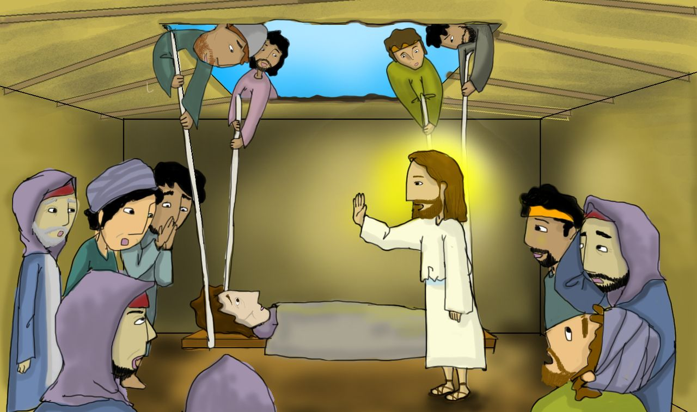
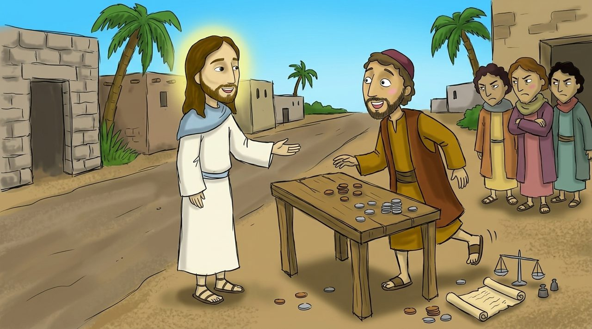
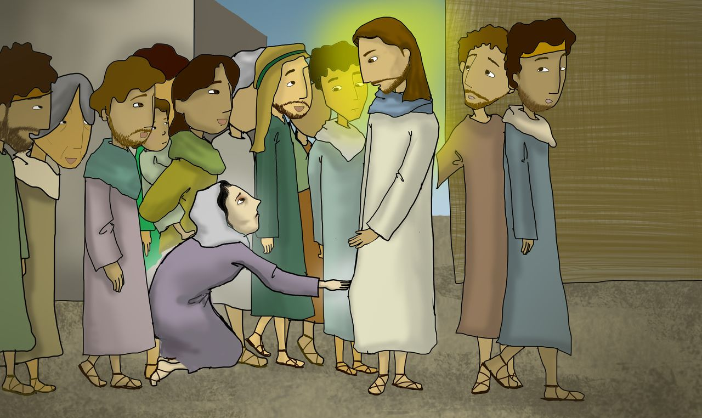

Uşaqlar üçün Müqəddəs Kitab dərsi · Matta, 13-cü dərs
Günahkarları çağırmağa gəldi
Matta 9:1–38
Sarı sözlərə toxun, mənası çıxacaq. 🔊 düyməsi Azərbaycan dilində oxuyur.
Bu gün nə öyrənəcəyik?
İsanın günahları bağışlayan olduğunu öyrənəcəyik.
İsanın heç kimin sevmədiyi Mattanı çağırdığını öyrənəcəyik.
Dostlarımızı İsanın yanına gətirən insan olacağıq.

Səhnə 1 · Matta 9:1–8
Dostlarının gətirdiyi iflic
Dostları adamı döşəyə uzadıb İsanın yanına gətirdilər. İsa onların imanını görüb dedi: “Oğlum, cəsarətli ol, günahların .”
Sonra dedi: “Qalx, döşəyini götür və evinə get.” O adam qalxıb ayaq üstə evinə getdi!

Səhnə 2 · Matta 9:9–13
Ardımca gəl, Matta
Matta idi. İnsanlardan artıq vergi aldığı üçün hamı ondan zəhlə tökürdü. İsa oradan keçəndə dedi: “Ardımca gəl.” Matta dərhal qalxıb Onun ardınca getdi.
İsa vergiyığanlar və larla birlikdə yemək yeyəndə insanlar deyinməyə başladılar. İsa dedi: “Həkim sağlamlara deyil, xəstələrə lazımdır. Mən günahkarları çağırmağa gəldim.”

Səhnə 3 · Matta 9:20–22
Paltarının ətəyinə toxunsam
On iki il qanaxmadan əziyyət çəkən bir qadın var idi. O düşündü: “İsanın toxunsam, sağalaram.”
Qadın arxadan gəlib yavaşca toxunanda İsa geri dönüb dedi: “Qızım, cəsarətli ol, imanın səni xilas etdi.” O anda qadın sağaldı.
Səhnə 4 · Matta 9:18–19, 23–26
Qız, qalx!
Sinaqoq başçısı Yairin qızı öldü. İnsanlar ağlayırdı, amma İsa dedi: “Qız ölməyib, .”
İsa qızın əlindən tutanda qız ayağa qalxdı! Bu xəbər bütün ölkəyə yayıldı.
Bu həftənin əzbər ayəsi
“Mən salehləri deyil, günahkarları çağırmağa gəldim.”
Matta 9:13 · uşaqlar üçün sadə dildə
Mən deyil, gəldim.
Boş yerlər üçün sözləri ardıcıl seç.
Söz lüğəti
Toxun, mənasına bax
Yoxlama sualları
4 sual
Gəlin düşünək
İflic adamın dostları kimi İsanın yanına gətirmək istədiyin dostun varmı?
Hamının sevmədiyi Mattanı İsa çağıranda Matta nə hiss etdi?
İsa niyə xəstələrə “cəsarətli ol” deyirdi?
Rəsm çək
Dostunu döşəkdə İsanın yanına aparan özünü və dostlarını çək.
Kağıza çək və şəklini müəllimə göndər
Kimi İsanın yanına gətirəcəksən?
Birlikdə dua edək
İsa, günahları bağışlayıb xəstələrə şəfa verdiyin üçün Sənə şükür edirəm. Hamının sevmədiyi Mattanı çağırdığın kimi məni də çağırdığın üçün sağ ol. Dostlarımı da Sənin yanına gətirən insan olmağıma kömək et. İsa Məsihin adı ilə dua edirəm. Amin.